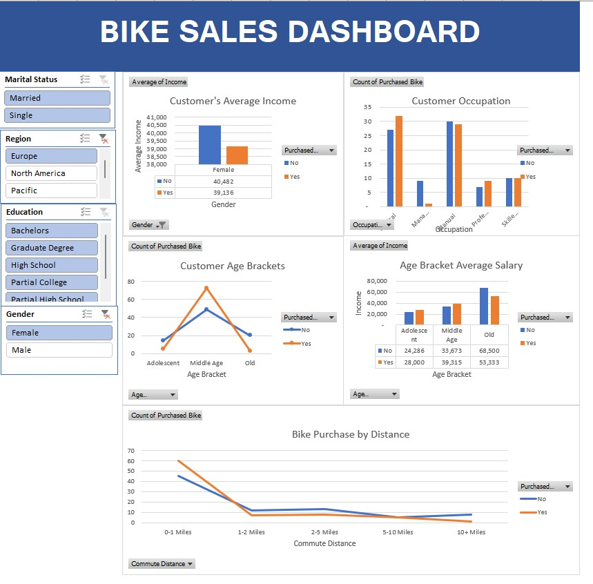

Made use of Python to explore data related to bike share systems for three major cities in the United States—Chicago, New York City, and Washington, I wrote code to import the data and answer interesting questions about it by computing descriptive statistics. This project also involved writing a script that takes in raw input to create an interactive experience in the terminal to present these statistics.
Skills: Data Science · Python (Programming Language) · Data Analysis

In this project I used SQL Server to explore global COVID 19 data.
Tableau vizzes for project on flight Delays and Cancellation in the United States (US).
In this project, I used SQL to explore a database related to movie rentals. Writing SQL code to run SQL queries and answer interesting questions about the database. I then built visualizations to showcase the output of my queries and synthesised valauble business insights concerning the rental business.

I analyzed real life data from the New York Stock Exchange. Drawing a subset of a large dataset provided by Kaggle that contains historical financial data from S&P 500 companies. In the project, I carried out financial analysis on the data; I used excel to create Profit and loss statements for all companies, and then made financial forecasts about revenue generation based on each companies historical data.
To finish, I provided visualisation of insights I gleamed, based on the descriptive statistics of a couple of Sectors. Specifically, I compared revenue generation between two different sectors.
Using SQL, I querried the Chinook Database, a database that holds information about a music store. The insight synthesised from this analysis is useful to the chinook team as regards understanding the media in their store, their customers and employees, and their invoice information.

Diving into this project I brought life to sales data from a bike-selling company. Using my business acumen, I weaved the details into an Excel dashboard.
Now, I didn't spill all the insights here, but trust me, that dashboard is a goldmine. It's like a treasure map for sales managers.
This project wasn't just about my tech skills; it's a peek into how I think. It shouts, "Hey, I understand business, and I know how to make data work for it!". It'd actually be exciting if you take a look at the dashboard and share with me insights that you're able to gather.